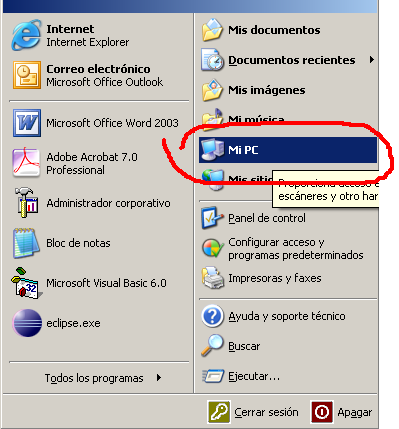
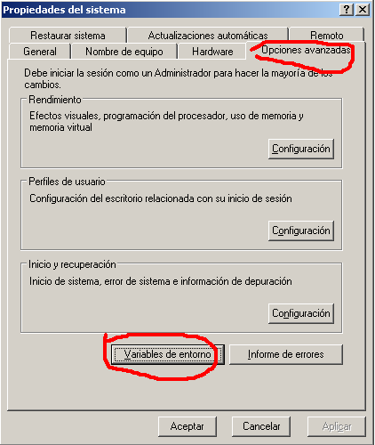

Table of Contents
Configuración del entorno
Se supone que se ha trabajado un mínimo sobre eclipse, con lo que aquí se indicaran las pinceladas de las opciones que más errores suelen ocasionar a los principiantes de OpenXava.Arrancar Eclipse
Se supone que se ha instalado el JDK de Java.Cuando se instala eclipse, una de las cosas buenas que tiene es que se instala en una carpeta. Es conveniente si estas en Windows, realizar un acceso directo.
Hay que comprobar que la variable de entorno JAVA_HOME a la ubicación del JDK. Para ello en Windows hay que ejecutar MiPC - Ver Información del sistema – Opciones avanzadas – Variables de entorno e indicar dicha ruta.




Tareas definidas en el fichero build.xml
En un proyecto OpenXava, tenemos un fichero build.xml, que tiene definidas muchas tareas por lotes denominadas tareas ant. En OpenXava, las tareas más comunes son:- generarCodigo: Permite la generación del código de las clases por primera vez
- regenerarCodigo: Si se han modificado algunas especificaciones de un módulo es conveniente volver a generar el código sustituyendo las clases generadas.
- actualizarEsquema: Si se ha añadido alguna propiedad a los componentes, seguramente se tendrá que modificar la estructura de la tabla asociada. Para elle hay que ejecutar esta tarea.
- desplegarWar: Para que el servidor de aplicaciones tenga todos los ficheros en los directorios correspondientes y poder servir las aplicaciones a los clientes, se ejecutará esta acción.
- reconstruir: Ejecuta una compilación del còdigo.
- generarPortlets: Para que se las aplicaciones puedan formar parte de un portal como Liferay.
- todo: Realiza alguna de las tareas existentes en el fichero build. Es la tarea por omisión (default)
Dentro del fichero build.xml tendremos entre otra la siguiente información:
[[code format="xml"]]
code
Donde se aprecia en las etiquetas “target”, algunas de las tareas definidas anteriormente (recontruir i generarPortlets)
Ejecución de la tarea por omisión de build.xml
Situado sobre el fichero build.xml de nuestro proyecto y apretando el botón derecho del ratón, y escogemos Run As – 2 AntBuild, entonces ejecutará la tarea definida por omisión que haya en build.xml.
Ejecución de una tarea concreta de build.xml
Operamos igual que el apartado anterior pero esta vez seleccionamos Run As – 3 AntBuild …, donde aparecen tres puntitos (…) , y ya seleccionamos una tarea de las definidas en el fichero BuildDefinición de herramientas externas (External Tools)
Una vez definidas las tareas se pueden ejecutar de forma muy comoda. Para ello hay que seleccionar el símbolo: que se encuentra tanto en la imagen anterior al ejecutar el Run As, como en la cabecera del eclipse. Habrá que crear una tarea nueva mediante el símbolo arriba a la izquierda marcado con 1
que se encuentra tanto en la imagen anterior al ejecutar el Run As, como en la cabecera del eclipse. Habrá que crear una tarea nueva mediante el símbolo arriba a la izquierda marcado con 1  . Se verifica que estamos en la carpeta Main como se marca con 2. Se comprueba el el fichero build.xml que queremos ejecutar es el de nuetro proyecto, y que el nombre que hemos dado a la tarea es el correcto. Una vez verificados estos datos, vamos a la carpeta Targets.
. Se verifica que estamos en la carpeta Main como se marca con 2. Se comprueba el el fichero build.xml que queremos ejecutar es el de nuetro proyecto, y que el nombre que hemos dado a la tarea es el correcto. Una vez verificados estos datos, vamos a la carpeta Targets.
Ahora marcamos la tarea ant que queremos, siempre que sea acorde con el nombre que le hemos dado, y deseleccionamos aquellas tareas que no nos interesan. Como se ve en la imagen, la tarea todo esta marcada como default (por defecto u omisión).

Por último vamos a la carpeta Refresh i comprobamos que está marcada la opción the entire workspace.
Ejecutar herramientas externas ya definidas
Una vez definidas las tareas se pueden ejecutar de forma muy cómoda. Para ello hay que seleccionar el símbolo: (podemos seleccionar el que se encuentra en la cabecera). Si aparece nuestra tarea (supongamos que es la 4 Gestio.regenerarCodigo) entonces la seleccionamos. Si no apareciera, tendríamos que ir a external tools y buscarla para ejecutarla.

Detalles sobre el servidor de base de datos HSQL
Se supone que se tiene un mínimo conocimiento de Bases de Datos, SQL etc. con lo que aquí se indicaran las pinceladas de las opciones que más errores suelen ocasionar a los principiantes de OpenXava. Suponemos que se tiene ya instalado el OpenXavaArrancar el servidor HSQL
Supongamos que tenemos (o queremos crear) una base de datos llamada gestion-db, para desde la línea de órdenes vamos a la carpeta openxava2.2/portal/bin y ejecutamos:- En Linux/Unix: ./starthsqldb.sh gestion-db 1666
- En Windows: starthsqldb gestion-db 1666
Administrador de la base de datos HSQL
Si vamos a la página WEB de HSQL y nos descargamos el aplicativo en otra carpeta distinta de OpenXava y la instalamos, y ejecutamos posteriormente el programa runManagerSwing.bat de la subcarpeta demo de la citada instalación, podremos administrar nuestra base de datos gestion-db, previamente arrancada en el servicio 1666. Si seleccionamos las opciones indicadas en la siguiente figura, podemos ver a nuestra base de datos en funcionamiento.
En efecto, ejecutamos la sentencia select con una tabla nuestra que sabemos que existe y a funcionar. Hay que advertir que se tiene que referenciar el catálogo previo al nombre de la tabla y separado por un “_”. En este caso el catálogo es “GESTIO”, y la tabla ININ03. Si no tienes una tabla ya creada como en nuestro caso puedes ejecutar el comando CREATE TABLE ……

Ahora tu entorno ya está listo para continuar con el tutorial 'Mi primer proyecto OpenXava'.